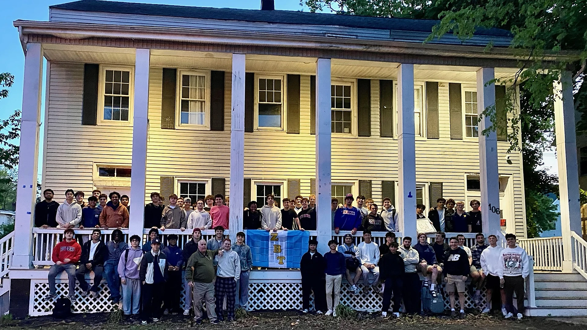

Raj Chawla, Ryan Hopp, Emmet Bushue, Michael Galari and Shane Russin contributed planning, coordination and persistence at different stages of the housing effort.
The chapter’s newest era
106 College Avenue
The current home of Beta Delta and a lasting center for brotherhood, recruitment, leadership and alumni connection.
106 College Avenue
More than a new address
The chapter house is where meetings, recruitment, study, alumni engagement and ordinary time together become part of the same experience. Establishing a home on College Avenue gives Beta Delta a visible and lasting presence in the center of Rutgers.
The opportunity required extensive planning, collaboration and persistence from undergraduate leaders, alumni, advisors, housing volunteers and Zeta Beta Tau International. The result is a foundation the chapter can continue improving for years.

A Home Built for Chapter Life
A place to meet, lead and return to
106 College Avenue supports the daily work of the chapter while giving brothers, families and alumni a place to gather. The house will continue evolving as renovations, furnishings and chapter improvements are completed.
See Chapter Houses Through the YearsThe People Behind 106
A milestone built through shared effort
Securing and preparing the house was a chapter-wide project. Key contributors included Raj Chawla, Ryan Hopp, Emmet Bushue, Michael Galari, Shane Russin and Chapter Advisor Keith Brauer.
Keith Brauer’s experience, relationships and long-term commitment helped connect undergraduate leaders with alumni and ZBT International.
The house will support chapter meetings, recruitment, study, alumni engagement and traditions that future classes will continue building.

Support 106 College Avenue
Help establish the house for the chapter’s next era
Housing Manager Shane Russin and Chapter Advisor Keith Brauer are helping coordinate fundraising for furnishings, chapter letters and practical improvements that will allow the house to serve brothers, families and alumni at a higher level.
Every contribution helps turn a major housing milestone into a fully established chapter home.
Support the House Campaign